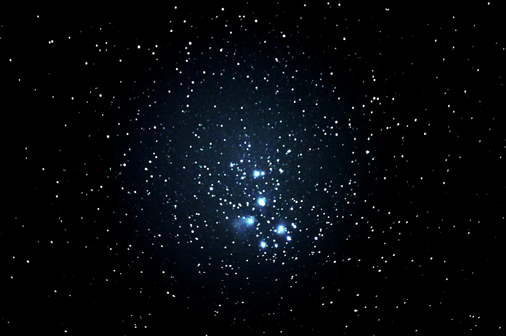

orion's nebulae, processed and stretched
Nick Niziolek - first Nikon DSLR images -------------------------------------
first pics: So, got the camera, and was too excited to not just throw it on a rail on my mount and try it without the scope! I had a 50-200mm (or something) zoom lens to put on it, cranked it up to the full zoom, and went out to take pics! My first target of choice was the Pleaides, a very easy target, a big cluster of stars right in line with Orion's belt and Aldebaran in Taurus. My only mistake: I didn't focus it... The pic below is a stack of roughly 10 of the best photos, all about 30s of exposure.

second pics: I got more confident, so I shot for a cooler target, Orion! I snapped a bunch of pics (can't remember how many) of Orion's Nebulae, at about 30s per image. After some processing and stretching, I got the pic below, which turned out pretty neat!